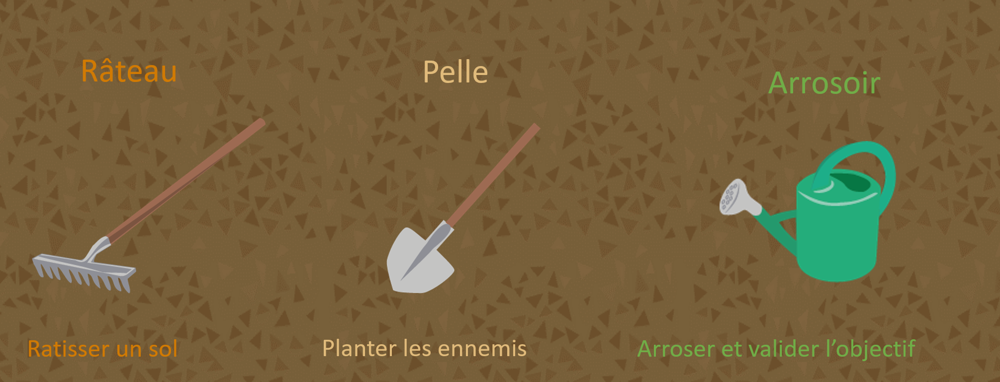
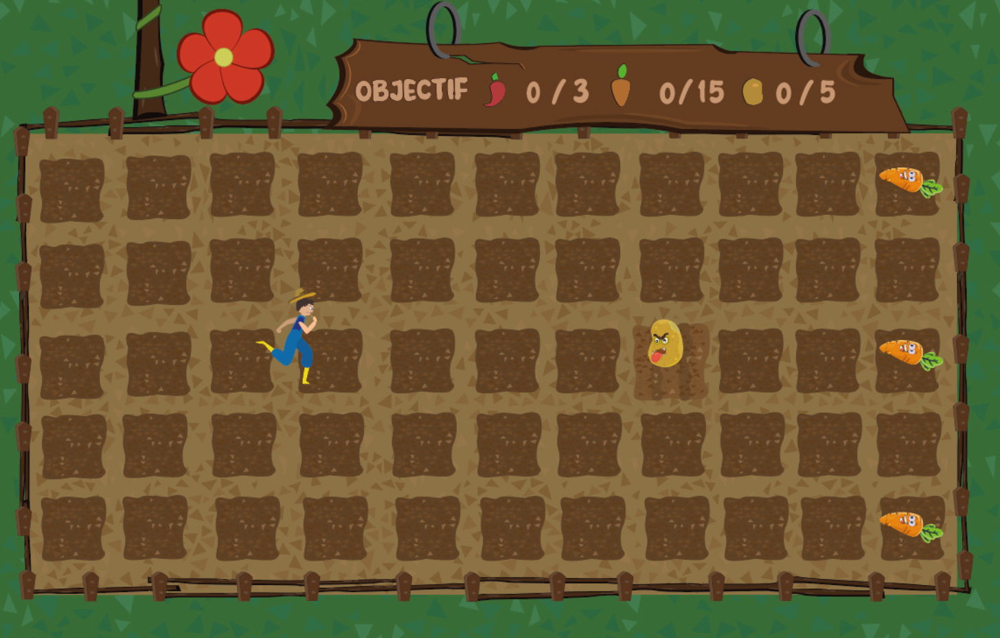
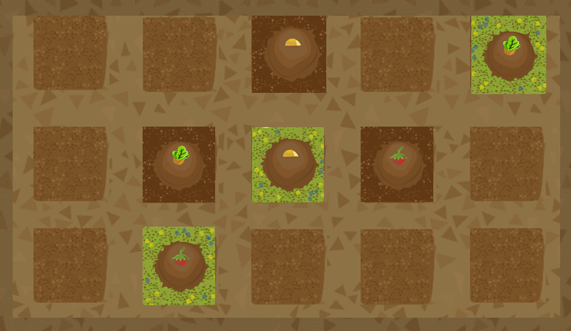
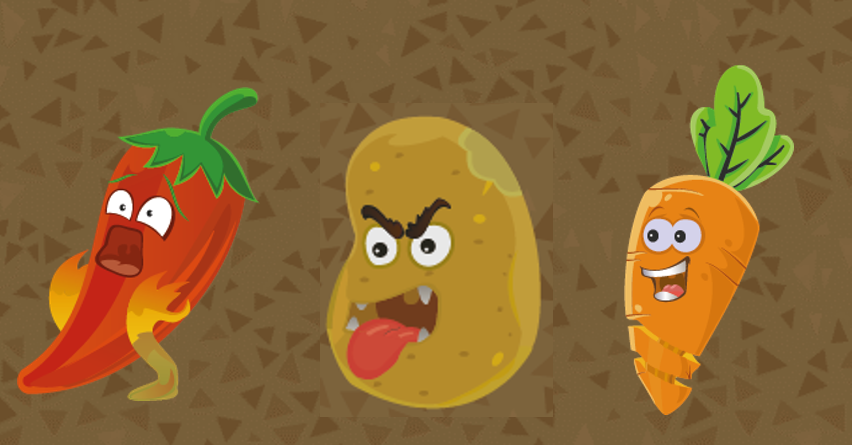

construct 3d · blueprint · beat'em up
Gameplay Programmer · Game Artist · Game Designer
Take on ruthless vegetables on a battlefield.
Plant them to reap a bountiful harvest and win the game.
Over the Garden is a top-down beat'em up for PC, made by a team of three with Antoine Vacherie and Léa Margnes. The intent: create a contrast between demanding gameplay, which should take more than one try to beat, and a cartoonish, childlike, cheerful art direction.

Game Design · Core loop
Enemies aren't killed, they're planted. The player has three gardening tools to use in a precise order on the field's plots to turn an enemy into a point toward the objective.

Game Design · Iterations
The first version was in side view: three weapons, each able to plant one enemy type, and a timer to add pressure. Managing space wasn't readable, so the game moved to a top-down view, then to a grid of plots inspired by Plants vs. Zombies.
Gameplay programming in Construct: the plot state machine tied to the tools, each enemy's behavior and the feedback that makes every action readable.

Game Programming · Systems
Each plot goes through four states: unprepared, raked, planted, watered. Each tool only acts on the matching state, turning the design's tool order into a simple, robust rule.
Game Programming · AI
Each vegetable has its own movement, so the field always gives the player something to anticipate.
A cartoon style deliberately at odds with the gameplay's challenge. Every color choice serves readability: a flat, dark background, warm-colored enemies and a cool-blue farmer who stands out from everything else.

Game Art · Characters
Each enemy's personality comes through its eyes and posture, and its design explains its behavior.
This sheet brings together all my Game Art work on the project: the characters, from sketches to animations, the weapons, the ground tiles, the background and the UI elements. Scroll down to see it all.